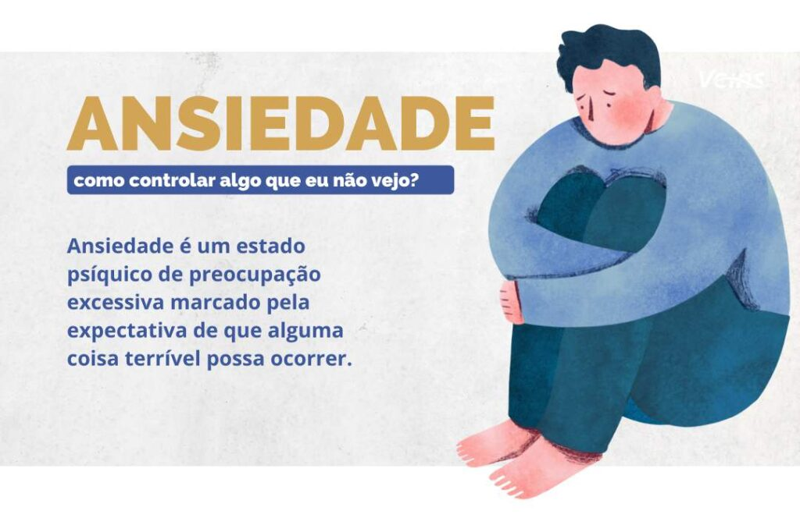

Fatores genéticos (incluindo histórico familiar de transtorno de ansiedade), ambiente (por exemplo, vivenciar um evento traumático ou stresse), constituição psicológica ou uma doença física.
O estresse em alguns casos pode ser o princípio do problema. O indivíduo que está constantemente estressado e que não se cuida, pode vir a desenvolver uma ansiedade patológica, que pode progredir para uma depressão ou vice-versa. Nos quadros de ansiedade associadas à depressão, a condição se torna mais grave.
Tanto a depressão quanto a ansiedade mudam o comportamento das pessoas. Por exemplo, quem antes parecia ser tranquilo, agora é inquieto e preocupado, quem antes era bem-humorado, agora parece estar sempre cabisbaixo. Assim, se você acredita que alguém próximo está com depressão ou ansiedade, provavelmente já percebeu pequenas mudanças no seu jeito de ser, pensar e falar. Pessimismo, reclamações constantes, medo irracional e posturas indecisas ou desanimadas costumam ser indicativos que a saúde mental de alguém não vai bem. O diagnóstico da depressão ou ansiedade é feito pelo psicólogo ou médico psiquiatra. Quando há desconfiança de que alguém pode ter uma dessas condições, é recomendado aconselhar essa pessoa a visitar algum desses especialistas. Somente um profissional pode diferenciar sintomas que são, de fato, de condições de saúde mental de um mal-estar passageiro.